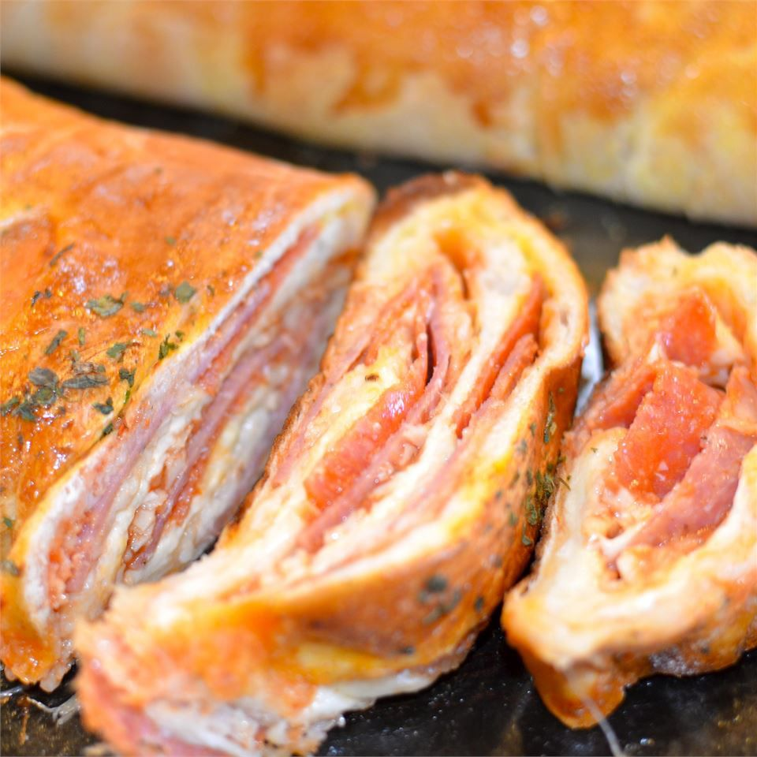

Home
Stromboli

Description
A stromboli is a baked Italian-American turnover featuring pizza or bread dough rolled into a cylinder around mozzarella cheese, Italian cold cuts, and optional tomato sauce, then sliced and served hot
My picky eaters love this for an easy weeknight meal and it's great served with a soup. My family fights over the leftovers!
Ingredients
- ½ pound bulk pork sausage (Optional)
- 1 (1 pound) loaf frozen bread dough, thawed
- 4 slices hard salami
- 4 slices thinly sliced ham
- 4 slices American cheese
- 1 cup shredded mozzarella cheese
- salt and ground black pepper to taste
- 1 egg white, lightly beaten
Steps
- Preheat oven to 425 degrees F (220 degrees C).
- Heat a large skillet over medium-high heat; cook and stir sausage until crumbly, evenly browned, and no longer pink, about 10 minutes. Drain and discard any excess grease.
- Pat out bread dough on an ungreased baking sheet, to 3/4-inch thickness. Lay salami, ham, and American cheese slices in center of dough. Sprinkle with mozzarella cheese, salt, pepper, and cooked sausage. Wrap dough to cover ingredients, pinching and sealing edges to prevent leakage; brush top with egg white.
- Bake in preheated oven until dough is baked and lightly browned, 17 to 20 minutes.